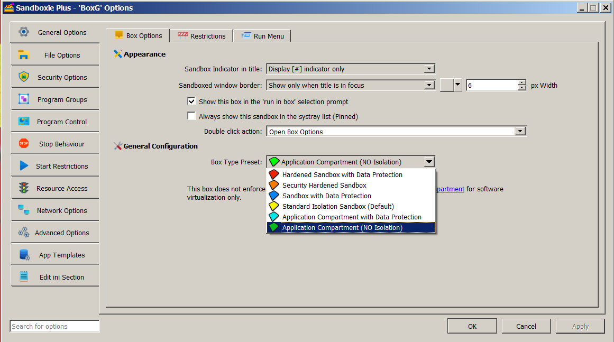

Compartment Mode
NOTE: This feature requires a supporter certificate.
The concept of an "Application Compartment" mode was introduced in Sandboxie Plus v1.0.0. This mode disables the normally used token-based security isolation in order to significantly improve compatibility while still retaining a level of security comparable to that of other available sandboxing products. It avoids many of the typical Sandboxie issues caused by processes running with a heavily restricted token.
The setting for a compartment box can be enabled by adding NoSecurityIsolation=y to the box settings section of Sandboxie.ini. It can also be enabled in the Sandman UI. Right-click on a box and select "Sandbox Options" from the drop-down menu (or simply double-click on a box) to bring up the Box Options UI. Select the Box Type Preset as "Application Compartment (NO Isolation)" (with a green box icon) and click OK to apply changes. The status column of Sandman UI labels this box as Application Compartment.

In compartment mode, file system and registry filtering are still in place to enforce any access rules. So, processes do run without administrative privileges. This filtering can be disabled by adding NoSecurityFiltering=y to the box settings section of Sandboxie.ini in order to provide a greater degree of compatibility.
A new object access filter, enabled by default for new installations since Sandboxie Plus v1.0.16, replaces the Sandboxie's old process/thread handle filter to facilitate process isolation. For previous versions starting with Sandboxie Plus v1.0.0, it can be enabled by adding EnableObjectFiltering=y to the [GlobalSettings] section of Sandboxie.ini.
Caveat: Even though an application compartment virtualizes the file system and registry, it does not change the process token or apply other more limiting restrictions. As a result, a process could potentially escape the virtualization. Because of this reduced security (even though it is only a slight reduction), this mode should be avoided for untrusted applications.
Recent Changes: Token based workarounds were added in subsequent Sandboxie Plus versions to facilitate even greater compatibility with the more commonly used programs. They used DropAppContainerToken=y for such workarounds and FakeAppContainerToken=program.exe,n to disable their use for a specific program. In Sandboxie Plus v1.8.2a and above, such workarounds are disabled when in compartment mode. In case of issues with some programs (primarily browsers), they can be re-enabled by using DeprecatedTokenHacks=y. Sandboxie Plus v1.8.0 moved the built-in access rules for an application compartment box to a dedicated template (included in the file Templates.ini under the [TemplateAppCPaths] section) for easier management. Sandboxie Plus v1.10.1 addressed and fixed various long-standing bugs affecting application compartment boxes.
Fun Fact (for any box type): If you add OpenFilePath=* to the box settings section of Sandboxie.ini (or disable the isolation in some other way), the status column in the Sandman UI displays OPEN Root Access as a warning that this box is no longer really a "sandbox"! Starting with Sandboxie Plus v1.3.2, the box icon also changes its default color.